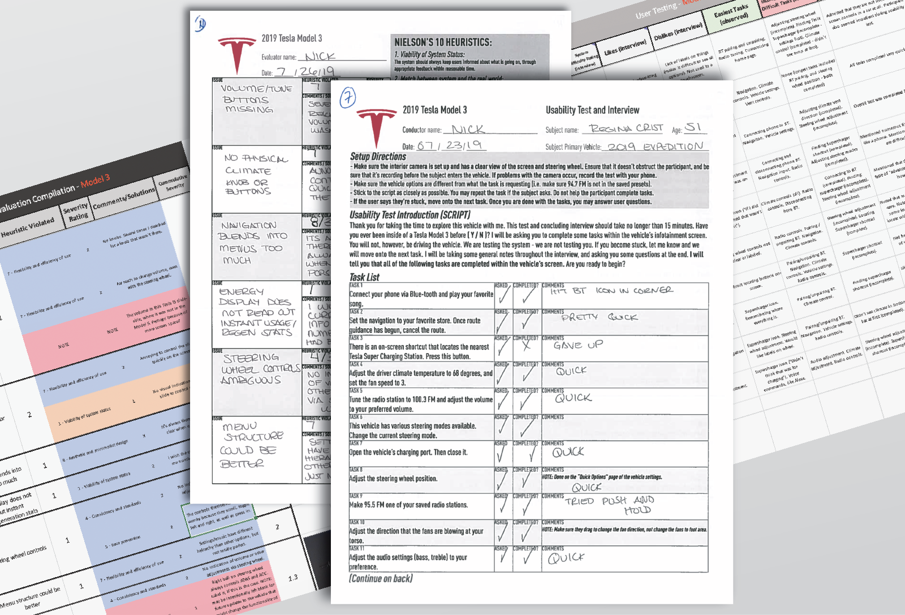
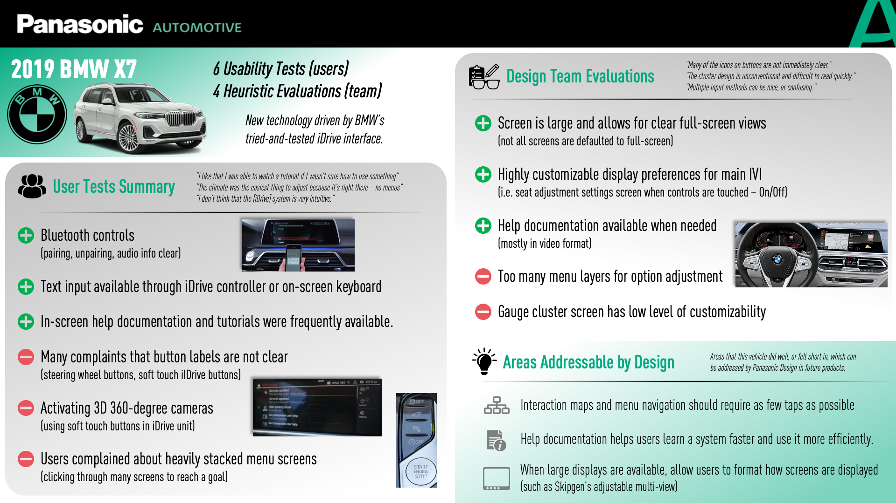

Below are some samples of my most recent work. Please reach out if you have any questions, or are interested in seeing more!
All work is original.
In a pursuit to refine Panasonic's own proprietary in-vehicle infotainment (IVI) system, I created a study to have our team experience the industry's newest, most innovative technologies first hand. The goal of this project was to gain empathy with users of the newest systems - users who may not have experience driving Teslas, vehicles with BMW's iDrive technology, or even vehicles with head-up displays. We searched for pros and cons to each system, so that we could use this knowledge while designing our own interfaces.
Aiming to gather the bulk of our information through Heuristic Evaluations and Usability Tests, my first step was to train my team on how to properly conduct both types of evaluations. After a series of workshops where I explained the differences and importance of each type of evaluation, as well as condusted demo evaluations with my team, I created the evaluation sheets, as well as the usability test guides for each of the vehicles we were benchmarking.
Once our data was collected, organized and coded for easy distribution, I replicated the data in a variety of mediums so that various departments could easily access and understand the information that we elicited from our research.

An OEM approached us with a few proposals for vehicle interior layouts with many non-traditional displays. One of these proposals involved a 2-inch round display in the center of the vehicle IP. Above, you can see some of the early exploratory research and ideation that I did for this project.
The idea was to have this round, non-touch-sensitve display act as more of an information center for the driver. Whenever there was any driver input into the IVI, this display showed changes that were happening. Research needed to be done on what drivers expect to see when they adjusted certain options in the vehicle (i.e. volume, cruise control, climate, etc.).
A simple head-up display demo animation that I designed and created for the Panasonic HUD display that was at CES 2019. This video was played on our HUD unit during the show in Las Vegas to show off Panasonic's HUD, as well as our system capabilities.
All assets and animation created by yours truly.
A short intro animation I created for a Tesla benchmarking video I was working on.
One of my first animations while I was still learning the basics of After Effects.
This short clips shows how vehicle interior lighting can be focused on the audio system, and be "born from" the head unit. The goal is to emphasize that the sound is provided and engineered by the displayed brand
An general illustration that I created to demonstrate a 360-degree vehicle awareness system.